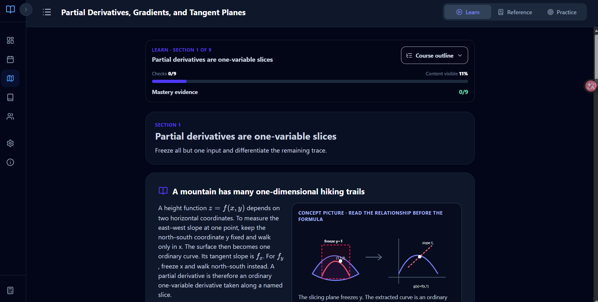
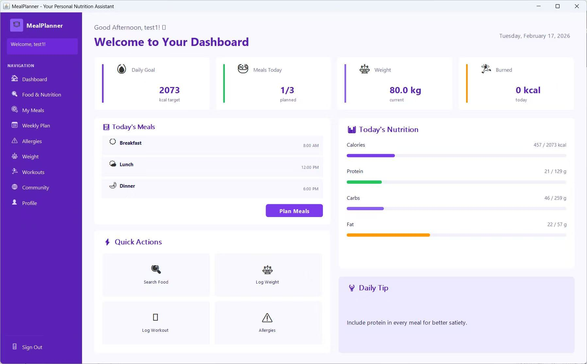
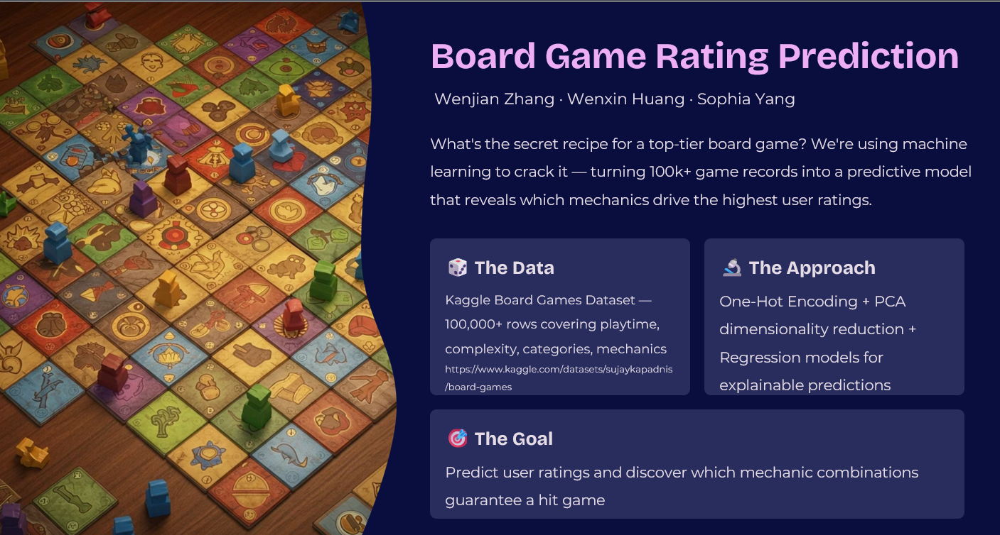

Project

GRE Subject Math Path
Short Description:Developed a comprehensive study path for the GRE Subject Math exam, integrating key concepts and practice problems to enhance preparation efficiency.
Technology:React, TypeScript, Vite, Tailwind CSS, Zustand, Vitest, Tencent CloudBase

Meal Planning
Short Description:Java desktop application with SQL Server backend for nutrition tracking, allergy management, weekly meal planning, and community meal import.
Technology:Java; Java Swing; FlatLaf; Microsoft SQL Server; stored procedures; SQL transactions; relational schema design
Car Model & Make Recognition
Short Description:Fine-grained image classifier for identifying car make, model, and year across 196 Stanford Cars classes.
Technology:Python; PyTorch; YOLOv8; ResNet50; transfer learning;

Board Game Success Prediction
Short Description:Prediction project on BoardGameGeek data using a custom success score, engineered features, text vectorization, model comparison, and error analysis.
Technology:Python; pandas/sklearn; TF-IDF; CountVectorizer; Ridge; Lasso; Random Forest; feature engineering; residual analysis